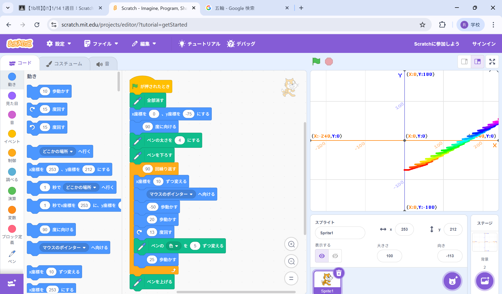
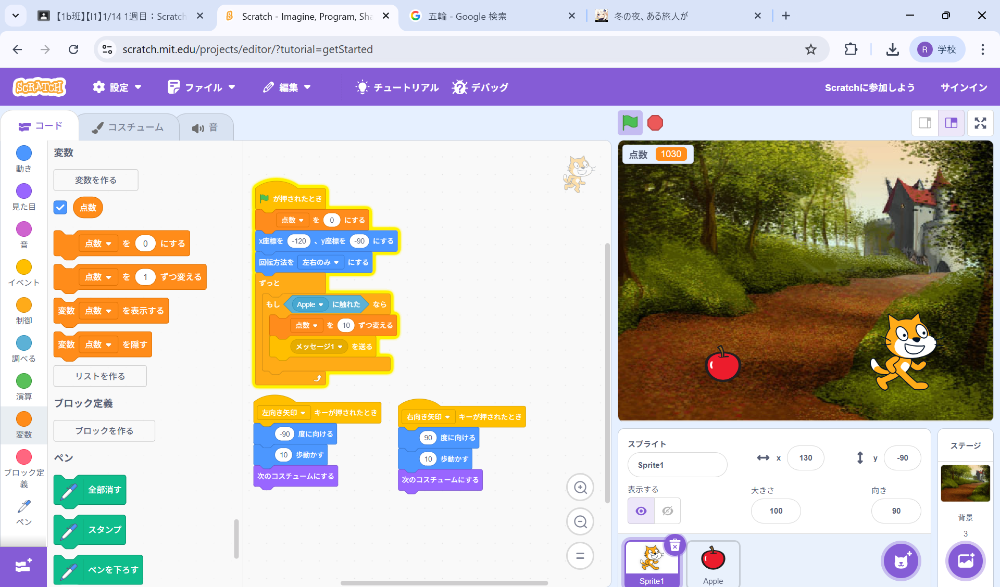

1週目のレポート ： 公大高専１年実習I-1
1b班25番 ニックネーム
第1週目
1-1 サイエンスアート

1.内容
猫を移動させるプログラムと猫の動きに合わせて線を引くプログラムを学んだ。
繰り返し図形を描き、書くたびに色を変えるプログラムを学んだ。
2.感想
自分でプログラムを１から考えて動かすのが難しかった。
思っていたような図形にならないこともあったのでプログラムを見直すことが大切だと思った。
1-2 ゲーム

1.内容
猫を移動させて、落ちてくるリンゴをつかむゲームを作成した・
スプライトに触れたらうふぉく、音が鳴る、コスチュームを変えるプログラムを学んだ。
キーボードの矢印キーでスプライトを動かしたり、反転、背景についても学んだ。
2.感想
今までプログラム等をしたときは文字を表示させるくらいで、あまり形になった感じがしなかったけど
初めて簡単なゲームを作って形になった気がしてよかった。
1-3 ホームページ作成
私のホームページ
1.内容
自己紹介をする自分のホームページを作成した。
Githubを使いhtmlファイルをいじり、自分の言いたいこと文章をホームページ上で表すことができた。
2.感想
今までホームページを作ったことがなかったので良い体験になった。
今回作ったホームページはあまりデザイン性がよくなかったので、もっと改善してデザイン性をよくしていきたいと思った。
各ページへのリンク
1週目のレポート
2週目のレポート
3週目のレポート
私のホームページ